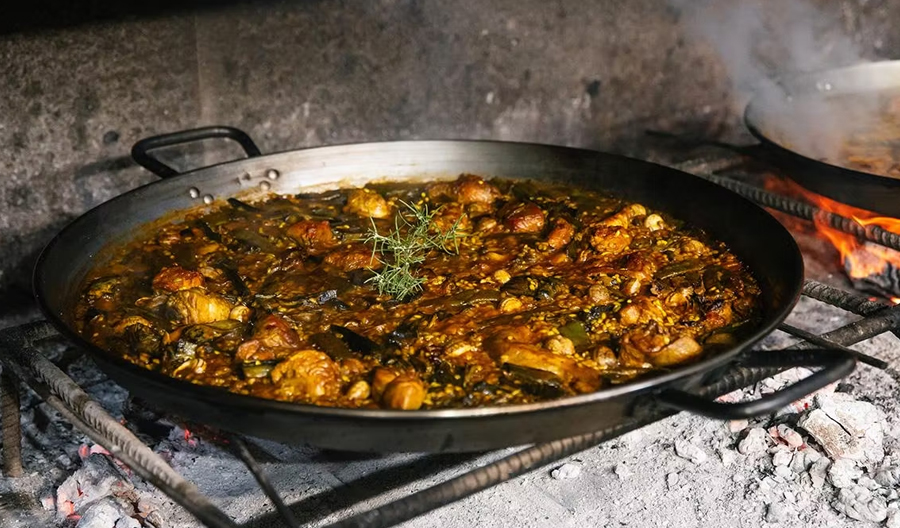

VALENCIA LOCAL FOOD GUIDE
Guida essenziale curata per gli ospiti di Casa Ross. Una selezione personale dei migliori angoli della città.
EDIZIONE MAGGIO 2026 IT
COME USARLA
Questa è una guida essenziale che include solo alcuni dei migliori posti che la città ha da offrire, secondo un punto di vista personale.
I luoghi sono elencati in ordine di lontananza dall'appartamento.
Nota importante: Si consiglia sempre di controllare gli orari di apertura e, se possibile, prenotare con anticipo. Alcuni posti sono aperti solo alcuni giorni della settimana e solo in determinate fasce orarie. Inquadra il QR code o clicca sul link sottostante per aprire istantaneamente la posizione su Google Maps.
Vuoi portarmi con te?

Scarica la versione digitale
COSA È TIPICO DI VALENCIA

Il re dell'esmorzaret: il "bocadillo" valenciano, farcito con i prodotti locali più freschi.

L'Horchata de chufa: la bevanda rinfrescante simbolo di Valencia, servita con gli immancabili fartons.

La vera Paella Valenciana, cotta rigorosamente a legna per un gusto autentico e inconfondibile.
COLAZIONE / BRUNCH
Una selezione di forni e pasticcerie per dolci ed altri lievitati, specialty coffee e posti dove poter godere di un brunch dall'ambiente accogliente.
Aspai Obrador Ruzafa
FORNO
Forno artigianale per pane di qualità e lievitati.
 VAI A GOOGLE MAPS
VAI A GOOGLE MAPSFornelino
CAFFETTERIA
Un bar/panificio/caffetteria con produzione propria in loco vicino casa.
 VAI A GOOGLE MAPS
VAI A GOOGLE MAPSPassage à Paris
PASTICCERIA
Piccola pasticceria di dolci e lievitati tipici francesi.
 VAI A GOOGLE MAPS
VAI A GOOGLE MAPSFiveo Coffee
SPECIALTY
Piccolo locale di caffè specialty di ottima qualità.
 VAI A GOOGLE MAPS
VAI A GOOGLE MAPSUbik Café Cafetería Librería
CAFFETTERIA
Caffetteria e libreria dall'atmosfera bohémien a Ruzafa.
 VAI A GOOGLE MAPS
VAI A GOOGLE MAPSBluebell Coffee
PATIO
Noto per il giardino interno e l'offerta brunch.
 VAI A GOOGLE MAPS
VAI A GOOGLE MAPSLe Grand Café Ruzafa
TERRAZZA
Bar con ampia terrazza sulla strada verso il centro.
 VAI A GOOGLE MAPS
VAI A GOOGLE MAPSChantilly coffee & Brunch
BRUNCH
Locale accogliente, ideale per colazioni, specialità di caffè e ricchi brunch.
 VAI A GOOGLE MAPS
VAI A GOOGLE MAPSForn de San Pablo
FORNO
Forno artigianale con dolci e lievitati tradizionali.
 VAI A GOOGLE MAPS
VAI A GOOGLE MAPSHorno Alfonso Martinez
FORNO STORICO
Forno storico della tradizione valenciana.
 VAI A GOOGLE MAPS
VAI A GOOGLE MAPS
ESMORZARET
Il rito valenciano per eccellenza: bocadillos giganti, arachidi, olive e cremaet.
La Cantina de Ruzafa
ICONICO
Una ex sede del partito comunista ed ex fabbrica di chitarre.
 VAI A GOOGLE MAPS
VAI A GOOGLE MAPSPelayo Gastro Trinquet
FAMOSO
Tapas, sangria e grigliate di carne alla valenciana in un ambiente contemporaneo nel pieno centro.
 VAI A GOOGLE MAPS
VAI A GOOGLE MAPSBar Nuevo Oslo
TRADIZIONALE
Un vero punto di riferimento per l'autentico esmorzaret, famoso per la ricca offerta ed eccezionali panini.
 VAI A GOOGLE MAPS
VAI A GOOGLE MAPSEl Trocito del Medio
MERCATO
Per una commissione ti cucinano ciò che compri al Mercado Central.
 VAI A GOOGLE MAPS
VAI A GOOGLE MAPSKiosko La Pergola
ISTITUZIONE
Luogo emblematico imbattibile per valore.
 VAI A GOOGLE MAPS
VAI A GOOGLE MAPSBar Restaurante Rojas Clemente
TRADIZIONALE
Bar storico famoso per i suoi pranzi e gli esmorzaret abbondanti.
 VAI A GOOGLE MAPS
VAI A GOOGLE MAPSBar Ricardo
STORICO
Un classico dal 1947, celebre per le sue tapas e l'autentico esmorzaret.
 VAI A GOOGLE MAPS
VAI A GOOGLE MAPSBodega Bar Flor
TRADIZIONE
Tipica bodega storica, leggendari i bocadillos.
 VAI A GOOGLE MAPS
VAI A GOOGLE MAPSBodega "La Pascuala"
STORICO
Istituzione leggendaria nata nel 1921 nel Cabanyal, celebre in tutta la comunità per i suoi bocadillos giganti.
 VAI A GOOGLE MAPS
VAI A GOOGLE MAPS
PRANZO
A Valencia, normalmente si pranza tra le 13:00 e le 15:30. Stilare una lista precisa è difficile, ma ci sono alcuni ristoranti che vale la pena segnalare.
Nota: se non fosse possibile seguire questa lista, è consigliabile optare per locali che offrono il menú del día: spesso rappresentano la scelta migliore.
La Tasqueta del Mercat
VICINO
Menù fisso creativo. Da provare gli arroz melosos.
 VAI A GOOGLE MAPS
VAI A GOOGLE MAPSVarques
SENZA LIMITI ORARI
Ottimo per menù fisso, paella o tapas fino a tardi.
 VAI A GOOGLE MAPS
VAI A GOOGLE MAPSBar Maipi
TRADIZIONALE
Autentico bar valenciano, famoso per le tapas e l'atmosfera casalinga.
 VAI A GOOGLE MAPS
VAI A GOOGLE MAPSALENAR Bodega Mediterránea
BODEGA
Piatti mediterranei e tapas curate con ottima selezione di vini.
 VAI A GOOGLE MAPS
VAI A GOOGLE MAPSTorero y Vino
CENTRO
Ottima scelta in centro storico, vicino alla cattedrale.
 VAI A GOOGLE MAPS
VAI A GOOGLE MAPSLateral Patriarca
CENTRO
Non è il massimo della qualità, ma per trovarsi al centro, in una piazza tranquilla, l'ambiente è accogliente e non costa molto.
 VAI A GOOGLE MAPS
VAI A GOOGLE MAPSKhambú Quart
VEGAN
Fast food vegano di ottima qualità, per un pranzo alternativo e gustoso.
 VAI A GOOGLE MAPS
VAI A GOOGLE MAPSAsador El Pastoret
BRACERIA
Carne e pesce con vista sui terreni agricoli.
 VAI A GOOGLE MAPS
VAI A GOOGLE MAPSTaberna El Grau
PORTO
Taverna moderna aperta non-stop con piatti abbondanti.
 VAI A GOOGLE MAPS
VAI A GOOGLE MAPSQuiosco Aduana
MARE
Pesce fresco e risi in atmosfera portuale speciale.
 VAI A GOOGLE MAPS
VAI A GOOGLE MAPS
LE REGINE DELLA PAELLA
La paella è il piatto più iconico di Valencia, con molte varianti (Senyoret, Bogavante, Mariscos), ma la più rappresentativa è la Valenciana, con pollo, coniglio e talvolta lumache.
Tradizionalmente si mangia a pranzo, ma qui trovi anche alcuni posti dove gustarla di sera.
Nota importante: in linea generale, è necessario prenotare in anticipo per mangiare la paella, specialmente se si ordina quella classica, che va comunicata al momento della prenotazione.
Casa Roberto
TRADIZIONALE ANCHE A CENA
Un classico imperdibile per gustare la vera paella valenciana in un ambiente storico.
 VAI A GOOGLE MAPS
VAI A GOOGLE MAPSEl Forcat
TRADIZIONALE ANCHE A CENA
Cotto a legna nel cuore del Carmen. Tradizione pura.
 VAI A GOOGLE MAPS
VAI A GOOGLE MAPSGoya Gallery
PLURIPREMIATO ANCHE A CENA
Ristorante pluripremiato per i suoi risi d'autore.
 VAI A GOOGLE MAPS
VAI A GOOGLE MAPSRestaurante Arroz y Tartana
TRADIZIONALE
Ristorante classico specializzato in piatti di riso e cucina mediterranea.
 VAI A GOOGLE MAPS
VAI A GOOGLE MAPSAlquería del Pou
RISAIE
Cascina rustica, la scelta preferita per autenticità.
 VAI A GOOGLE MAPS
VAI A GOOGLE MAPSArroceria Binhui Food
DI QUARTIERE ANCHE A CENA
Autentica arroceria nota per le deliziose paelle e piatti a base di riso.
 VAI A GOOGLE MAPS
VAI A GOOGLE MAPSCasa Carmela
NON LA DIMENTICHERAI
Istituzione storica sul mare. Paella cotta a legna.
 VAI A GOOGLE MAPS
VAI A GOOGLE MAPSEl Racó de la Paella
A LEGNA
Ristorante specializzato nella cottura a legna in un'atmosfera tradizionale valenciana.
 VAI A GOOGLE MAPS
VAI A GOOGLE MAPSBarraca Montoliu
TRADIZIONE
Esperienza rurale vera alle porte della città.
 VAI A GOOGLE MAPS
VAI A GOOGLE MAPS
MERENDA
Verso le 16:30 / 17:00 i valenciani fanno spesso una pausa per lo spuntino. In inverno generalmente una cioccolata calda con churros o buñuelos e d'estate una rinfrescante horchata.
Horchatería Daniel
ICONICO
Nel mercado Colón, probabilmente la migliore horchata…e non solo.
 VAI A GOOGLE MAPS
VAI A GOOGLE MAPS
Se siete qui durante las fallas, non perdete l'opportunità di provare i buñuelos dal chiosco di Bienve che si troverà nell'Avenida Regne de València, 24.
VALENCIA DA BERE
La città offre cocktail bar segreti, rooftop spettacolari e beach club eleganti per la notte.
CENA
La Pichurrita
TAPAS
Tapas gustose e ambiente vivace, perfetto per una serata in compagnia.
 VAI A GOOGLE MAPS
VAI A GOOGLE MAPSRacó del Túria
TRADIZIONALE
Cucina tipica valenciana e mediterranea in un locale accogliente e curato.
 VAI A GOOGLE MAPS
VAI A GOOGLE MAPSTaberna Pare Pere (El Cantonet)
TABERNA
Atmosfera informale, tapas sfiziose e prodotti di alta qualità.
 VAI A GOOGLE MAPS
VAI A GOOGLE MAPSA huevo - Restaurant a València
MODERNO
Proposte gastronomiche originali in un ambiente moderno e accogliente.
 VAI A GOOGLE MAPS
VAI A GOOGLE MAPS